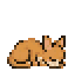
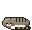

Lo que suelen preguntar
Y si tu duda no está aquí, escríbeme. Respondo yo, no un sistema.
Empezar
¿Puedo probar Domingo antes de comprarlo?
Sí. Descarga la app y úsala 14 días con todas las herramientas, sin cuenta ni tarjeta. La prueba empieza sola la primera vez que abres Domingo.
¿Qué pasa cuando terminan los 14 días?
Tus manuscritos siguen ahí: puedes abrirlos, leerlos y exportarlos cuando quieras. Para volver a escribir, compra tu licencia y pega la clave en la app. Todo lo que escribiste durante la prueba se queda contigo.
¿Qué es Domingo Lite?
Una versión gratuita de Domingo que se usa en el navegador, sin instalar nada. Tiene el editor, el corcho, el mapa de relaciones, Misi y los mangos, con un tope de 5,000 palabras. Lo que escribas lo guardas como archivo .mingo y lo abres después en la app completa. Abrir Domingo Lite.
¿Hay versión para Linux, iPad o teléfono?
Por ahora Domingo es para macOS y Windows. Si te interesa otra plataforma, escríbeme: eso ayuda a decidir qué sigue.
Tus textos
¿Necesito internet para usar Domingo?
No. Domingo funciona sin conexión. Solo necesitas internet para descargarla y activar tu licencia.
¿Dónde se guardan mis textos?
En tu computadora, en archivos .mingo que tú eliges dónde guardar. No hay nube ni cuenta. Domingo hace copias de seguridad automáticas al guardar y puedes recuperarlas por fecha.
Licencia y pago
¿Es una suscripción?
No. Pagas una vez y la licencia es tuya, sin fecha de caducidad.
¿En cuántos equipos puedo usarla?
Tu licencia sirve para dos equipos, por ejemplo tu computadora de escritorio y tu laptop, aunque uno sea Mac y otro Windows. Para cambiar de computadora, en la anterior ve a Configuración › Licencia › Liberar este dispositivo.
¿Cómo funciona la preventa?
¿Y si no me gusta?
Tienes 14 días para pedir tu reembolso, sin preguntas. Escribe a contacto@domingo-app.com.mx.
Instalación
Mi Mac dice que no puede comprobar la app. ¿Qué hago?
Domingo todavía no tiene firma de Apple, así que la primera vez macOS la detiene. Abre Ajustes del Sistema, entra a Privacidad y seguridad, baja hasta la sección Seguridad y pulsa «Abrir igualmente». Solo hay que hacerlo una vez. Los pasos con imágenes están en la guía de instalación.
Windows muestra un aviso azul al instalar. ¿Es normal?
Sí. Es el filtro SmartScreen, que aparece con programas nuevos que aún no tienen firma. Pulsa «Más información» y después «Ejecutar de todas formas». Los pasos con imágenes están en la guía de instalación.
¿Dudas, ideas o un error que encontraste? Escríbeme.
contacto@domingo-app.com.mx

